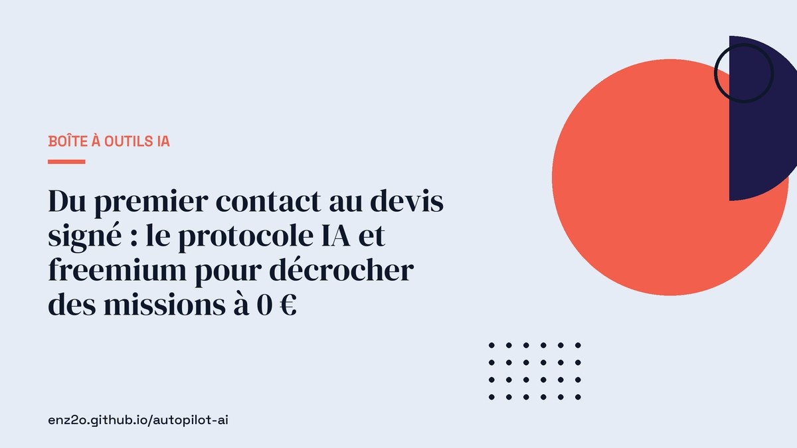

Du premier contact au devis signé : le protocole IA et freemium pour décrocher des missions à 0 €
2026-11-20
Article contenant des liens affiliés.

Passer des heures à rédiger une proposition commerciale pour un prospect qui ne donnera plus signe de vie : c'est le cauchemar récurrent des freelances, des consultants débutants et des étudiants en quête de leurs premières missions en freelance.
Le temps passé à formaliser des devis, réécrire des e-mails d'introduction ou synthétiser des notes d'appels téléphoniques grignote les journées sans créer de valeur directe. Pourtant, il est tout à fait possible de diviser ce temps administratif par trois en mettant en place une chaîne opérationnelle fluide, basée sur des outils d'intelligence artificielle gratuits et des plateformes freemium.
Voici une méthode pragmatique en quatre étapes pour transformer une simple prise de contact en mission confirmée, sans dépenser un seul centime en abonnements logiciels.
1. Transformer des notes d'appel brouillonnes en cahier des charges clair
Lors d'un premier échange (téléphonique ou en visioconférence), votre priorité absolue doit être l'écoute active, pas la prise de notes dactylographiées frénétique. Poser des questions ouvertes et observer les réactions du prospect apporte bien plus d'informations utiles que de taper mot à mot ce qu'il dit.
Pour garder une trace fidèle sans perdre le fil de l'échange, notez uniquement les mots-clés essentiels sur papier à l'aide d'un carnet de notes couverture rigide ou enregistrez la conversation (avec l'accord explicite de votre interlocuteur).
À partir de ces éléments bruts, utilisez une IA générative en version gratuite (ChatGPT, Claude ou Le Chat de Mistral) pour structurer le compte-rendu. Donnez-lui une directive précise :
« Voici mes notes brutes issues d'un appel découverte avec un prospect dans le secteur [secteur]. Structure ces éléments en trois volets distincts : 1) Le problème principal du client, 2) Ses objectifs chiffrés à court terme, 3) Les contraintes techniques et délais évoqués. Adopte un ton synthétique et professionnel. »
En moins de trente secondes, vos bribes de phrases deviennent un document de cadrage impeccable que vous pouvez immédiatement renvoyer au prospect pour valider la bonne compréhension de son besoin. Ce simple geste renforce instantanément votre crédibilité.
2. Générer une proposition de valeur sur-mesure en 15 minutes
Une proposition commerciale efficace n'est pas une simple liste de tarifs. C'est un document persuasif qui démontre comment vous allez combler l'écart entre la situation actuelle du client et son objectif idéal.
Pour rédiger ce livrable sans partir d'une page blanche :
- Injectez le brief validé dans votre outil d'IA habituel.
- Demandez-lui de formuler trois options d'accompagnement (par exemple : une offre essentielle, une offre intermédiaire et une offre clé en main), avec les bénéfices concrets associés à chaque palier.
- Spécifiez vos tarifs et vos conditions de livraison réelles, car l'IA ne doit jamais décider de votre tarification.
L'intelligence artificielle se charge d'harmoniser le style, de supprimer le jargon technique inutile et d'ordonner les arguments par ordre d'impact. Votre rôle se résume alors à ajuster les nuances, vérifier la cohérence des engagements et injecter votre touche personnelle.
Travailler efficacement sur ces documents stratégiques nécessite un confort visuel optimal : installer votre poste avec un support ordinateur portable reglable permet de conserver une posture saine durant vos sessions de rédaction intensive.
3. Centraliser sa vitrine et ses devis sans multiplier les logiciels
Envoyer un simple fichier PDF par e-mail fonctionne, mais cela manque souvent d'interactivité. Beaucoup de freelances et de créateurs pensent qu'il faut souscrire à plusieurs outils payants pour disposer d'une page de présentation soignée, d'un formulaire de capture et d'un système de facturation basique.
C'est une erreur coûteuse au démarrage. Vous pouvez centraliser l'ensemble de votre présence en ligne sur un outil unique disposant d'un compte gratuit complet.
Avec une solution tout-en-un comme Systeme.io, vous pouvez héberger une page vitrine épurée, créer un formulaire où vos prospects déposent leurs besoins, et même configurer les pages de paiement pour vos prestations forfaitaires ou vos produits numériques. L'offre gratuite permet de démarrer sans stress financier tout en offrant une expérience soignée à vos clients.
Plutôt que d'éparpiller vos données entre un constructeur de site, un gestionnaire d'e-mails et un logiciel de devis, concentrer votre mécanique commerciale sur une seule interface vous épargne des heures de maintenance technique.
4. Automatiser les e-mails de suivi sans paraître insistant
La majorité des contrats se signent lors de la phase de relance. Pourtant, la peur d'être intrusif pousse de nombreux indépendants à ne jamais relancer un devis resté sans réponse.
L'IA permet d'éliminer ce blocage émotionnel en rédigeant des séquences de suivi polies, professionnelles et axées sur l'apport de valeur plutôt que sur la demande pressante. Vous pouvez préparer deux modèles types :
- La relance à J+4 : Elle apporte une ressource utile (un article, une idée rapide ou un exemple de réalisation similaire) en lien avec la problématique discutée lors du premier appel, tout en rappelant la disponibilité de la proposition.
- La relance à J+10 : Elle demande simplement si le projet reste d'actualité ou si le calendrier a évolué, en clôturant élégamment l'échange sans rancœur.
En intégrant ces messages dans votre séquence automatisée sur Systeme.io, vos relances partent au bon moment, même quand vous êtes concentré sur la production d'une autre mission.
Les règles d'or pour garder le contrôle de son cycle commercial
Bien que l'association de l'IA et des outils freemium accélère le traitement administratif, gardez toujours à l'esprit ces trois principes fondamentaux :
- Ne laissez jamais l'IA générer des prix ou des promesses irréalistes. Vous êtes le seul garant de vos délais et de votre niveau d'expertise.
- Relisez chaque e-mail avant l'envoi. Une formule mal calibrée générée par un modèle linguistique peut refroidir un prospect hésitant.
- Respectez la confidentialité. Ne collez jamais de données sensibles (données bancaires, noms complets de clients confidentiels, codes d'accès) dans les invites d'une IA publique.
En appliquant ce protocole dès votre prochain prospect, vous passerez moins de temps à taper du texte répétitif et davantage à échanger avec de futurs clients, tout en conservant un budget d'outillage strictement nul.